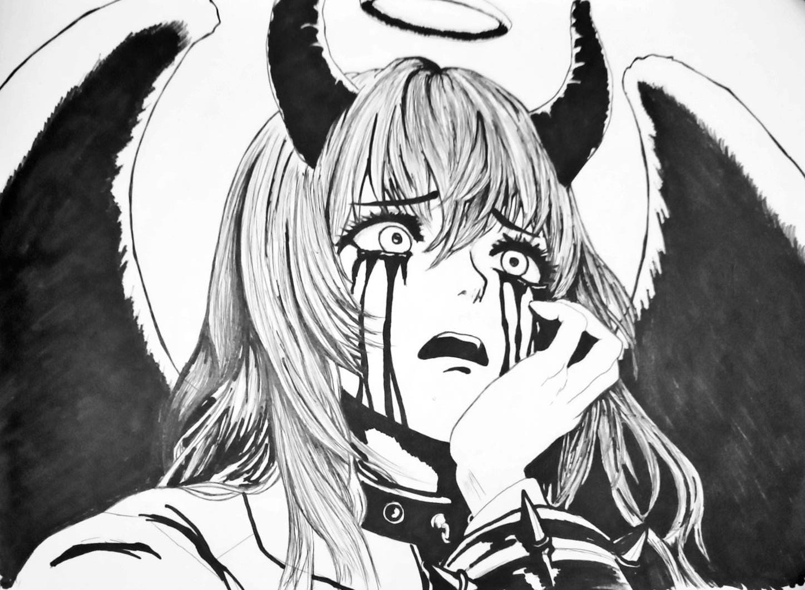
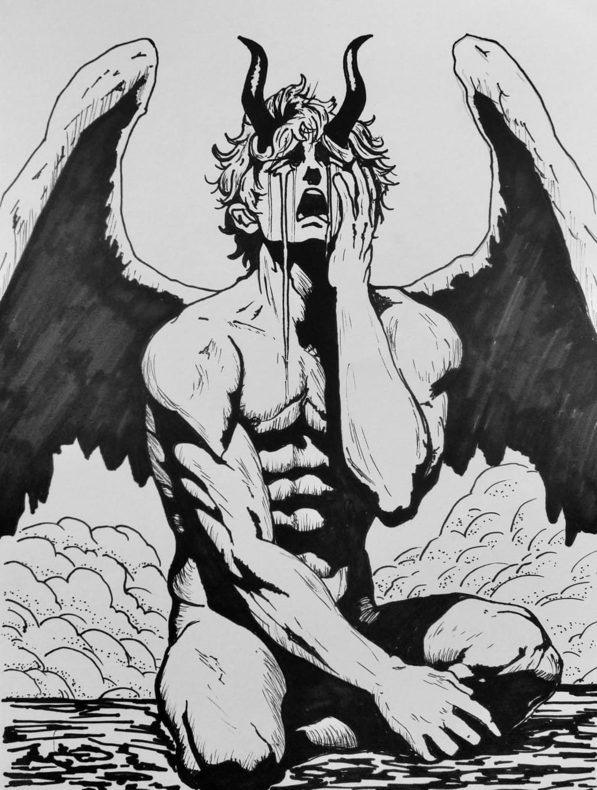
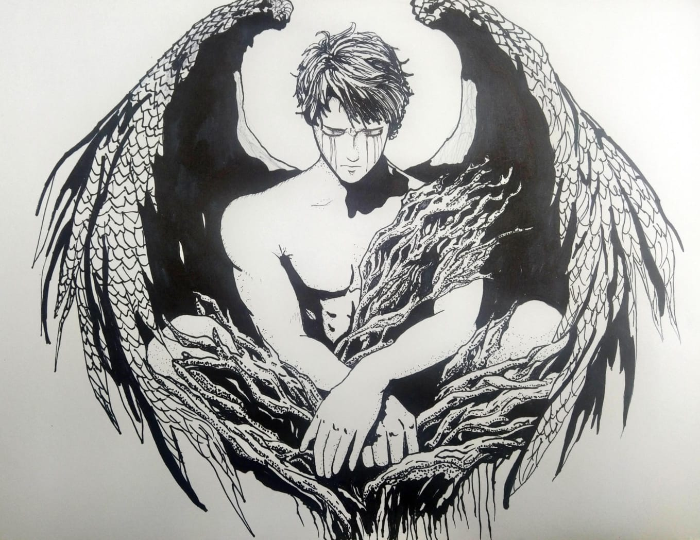
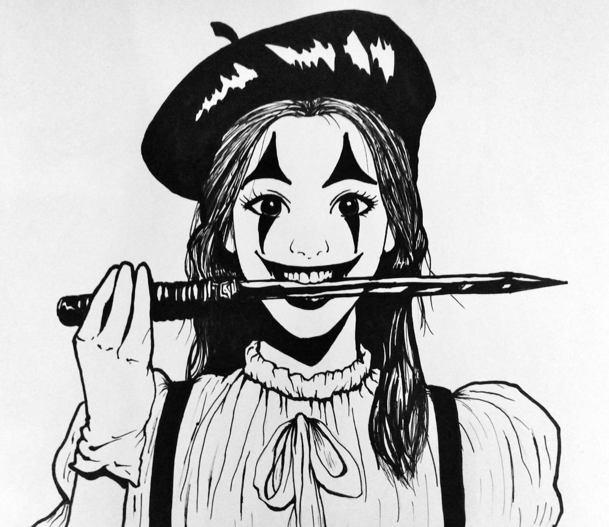
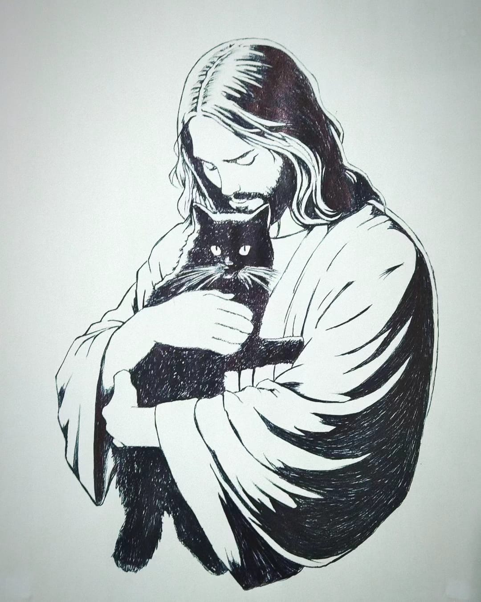
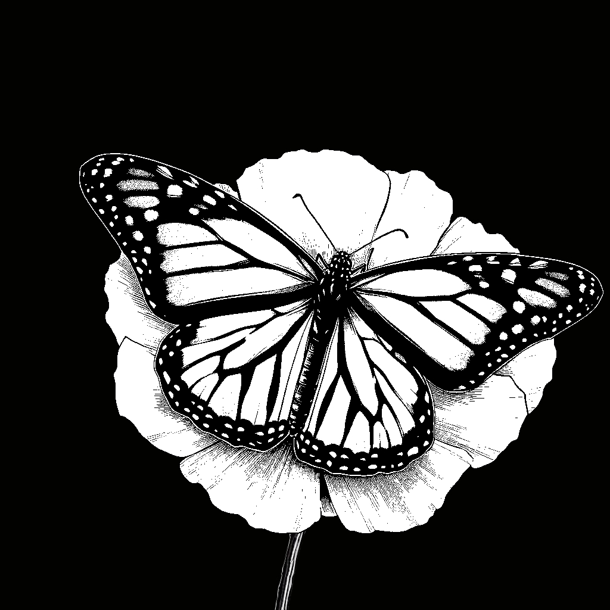

Fauces del abismo
Un recordatorio de una fiesta que nunca terminó.
2024/02/09 - Etlier Dimmen
La risa de la Arlequín resonaba en los calabozos de la secretaría de guerra, donde la luz no se atrevía a entrar.
Se dice que aquellos quienes confiaron en su sonrisa no encontraron retorno, sino una eternidad tortuosa de danza pagana.
Día normal
Primer concept art para AND.
2017/04/08 - A Normal Days
Uno de mis primeros dibujos digitales, lo diseñé durante un curso que tomé por parte de una escuela llamada "Overlight", que me enseñaron nada, pero me pusieron a trabajar.
Los garabatos en forma de texto los dibujó mi instructor, que quiso simular kanjis... Irónicamente yo ya estudiaba japonés, los conservé como un bonito recuerdo.
Sobre la imagen, Tom Sunderland y una primera versión de Allison Daly.

Lamento
Un alma atormentada en un cuerpo demoníaco, atrapada en un ciclo de desesperación.
2023/08/11
Una criatura que nunca tuvo la oportunidad de redimirse, alza sus plegarias cuando Dios ya ha cerrado los oídos.
Sus lágrimas negras caen sin esperanza de clemencia. ¿Podrá alguna vez encontrar el perdón en un cielo vacío?

Sacrificio eterno
En el acto de amor más grande de la existencia, eligió convertirse en obscuridad para que su hermano pudiera brillar.
2024/01/23 - 012
En el principio de la creación, Dios formó dos poderosos arcángeles, Miguel y Lucifer, quienes eran amados por igual. Cuando llegó el momento de establecer el balance entre la luz y la oscuridad, Dios necesitaba un líder para las tinieblas, asegurando así la existencia del mal y el libre albedrío.
Lucifer se ofreció voluntario, garantizando que el odio jamás tocara a su hermano Miguel. Asumió el papel del adversario, sabiendo que su destino sería ser derrotado una y otra vez por los ejércitos celestiales liderados por el ser que más amó.
Con el paso de las eras, Lucifer se convirtió en el símbolo máximo del mal, enfrentando constantemente la luz y la justicia del cielo. Sin embargo, en su soledad y pesar, a veces sus lágrimas brotan de manera incontrolable. Estas lágrimas son testigos de un tormento eterno, preguntándose si su sufrimiento proviene de la añoranza del amor perdido o de la lamentación por la decisión que lo condenó.
El Portador de la Luz, en su sacrificio, revela la paradoja del mal nacido del amor más puro.
Solo son...
Ya no hay buenos días, solo días.
2023/12/29
No eres el problema, solo dejaste de serles útil.

Pésame
Máximo Arcángel que carga con el peso de la batalla en contra de su hermano caído.
2024/02/29 - 012
En sus momentos de soledad, las lágrimas brotan, un reflejo del amor y la tristeza por su igual de creación.
Encarna el conflicto entre deber y compasión, preguntándose si el sacrificio de su hermano justificó su eterna lucha.
Helios
Is Nobody Here
2019/11/17
El vaporwave está muerto.
Y nosotros lo matamos.
Despropósito
La replicante se adapta al caos y la decadencia del mundo estelar.
2024/02/07 - SOS project
En un refugio improvisado, escondido en los suburbios de la ciudadela flotante, yace un taller clandestino lleno de herramientas robadas y partes de desecho.
Mientras repara los circuitos y engranajes de su brazo dañado, su mente está absorta en pensamientos de supervivencia. Cada ajuste de sus componentes mecánicos refleja su lucha por mantener su existencia en un universo que la considera una reliquia obsoleta.
En la oscuridad de su taller, se pregunta si algún día podrá encontrar un lugar donde pertenecer en un mundo que ha olvidado a sus creadores. Cada día debe interpretar un amargo libreto de desperanza y soledad.
Betty Boop
Original de Minus8.
2017/02/02
Minus8 ya recibió ayuda psicológica, y yo la redibujé porque se veía bonita.

Tu se' Pagliaccio
Ríete de tus desgracias y el público aplaudirá.
2021/11/05
¿No sienten como si algo terrible estuviese a punto de suceder?
Fast Delivery!
Sofía aprendió la de "Chambear".
2021/03/19 - A Normal Days
No tengo una historia para este personaje, no tiene sentido que trabaje en una pizzería porque es ciega.
Fue mi primer intento real de hacer estilo anime, luego de esta práctica me enteré que la magia se encuentra en colores saturados y filtro gaussiano.
Tenía muchas ideas para la imagen original, pero nunca he sido de organizar bien los personajes con un fondo, por eso terminó como terminó, de cualquier forma, así me gustó.
Patos
Una payasa cargando patos.
2024/02/20
Quisiera tener un trasfondo para este personaje, pero no es más que la combinación del estreno de Digital Circus con yo mismo, en el parque alimentando patos con comida para peces dos bolsas por diez.
Nota: Subir la versión final.
Se me había acabado la tinta del bolígrafo y lo terminé de pintar dos días después (lo que tardé en hacerme con el bolígrafo de Diego).

Deus Sabaoth
Quisiera no sentirme solo.
2022/12/21
En una época donde quería vender dibujos y retratos en el parque, pensé que los gatos y Dios venden muy bien.
Pero eso sería aprovecharme de la fe de la gente y Wilson a estado hospitalizado unas cuantas veces, mi gato no la ha tenido peor, así que busco a quien agradecer".
Una broma que suelo decir es referencia a Diógenes el perro, quien buscaba "a un hombre justo", lo importante de la búsqueda no es el resultado, sino el proceso.

Monarca
Diseño de tatuaje de una mariposa monarca.
2023/11/01
Lo más cercano que he hecho de una comisión.